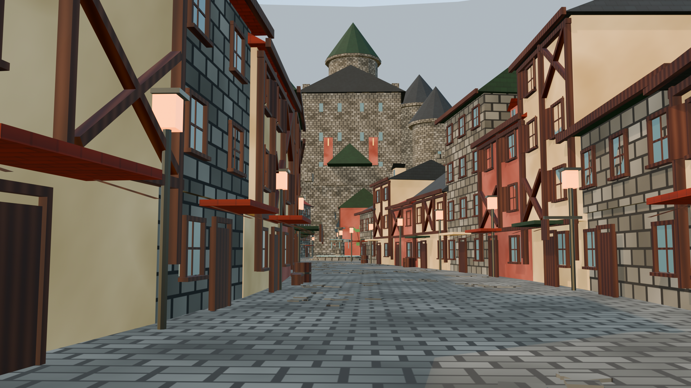
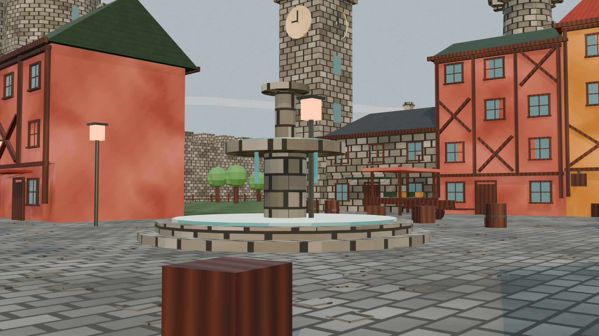
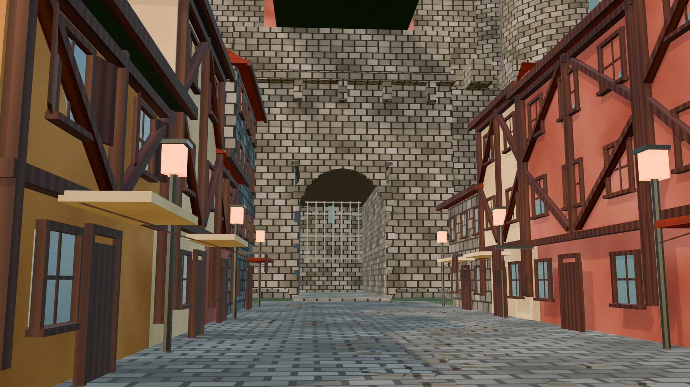
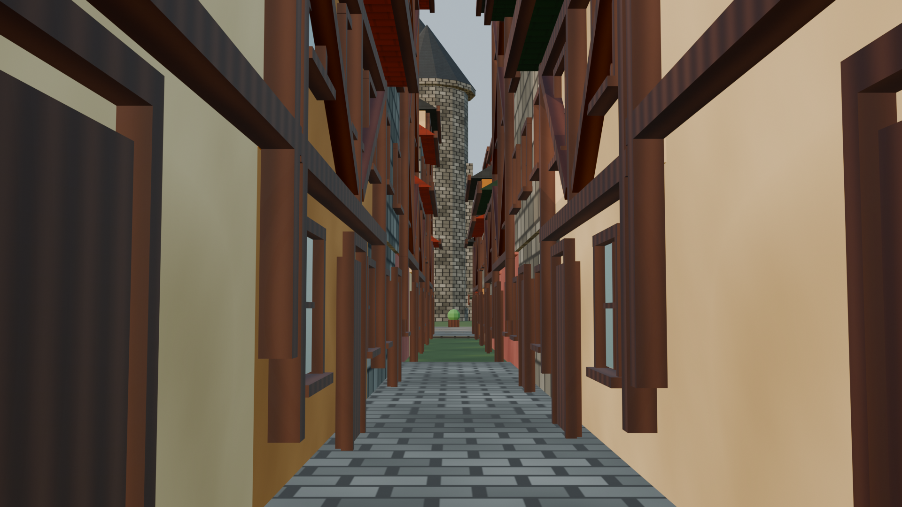
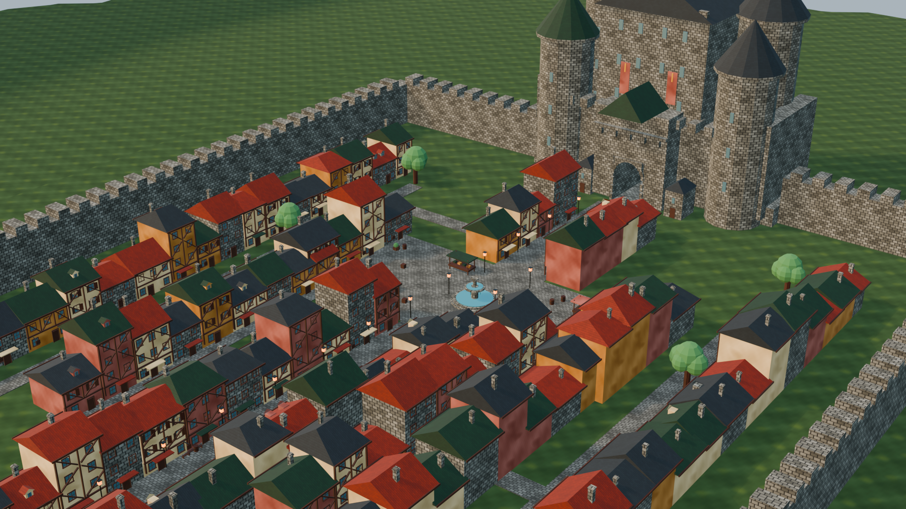
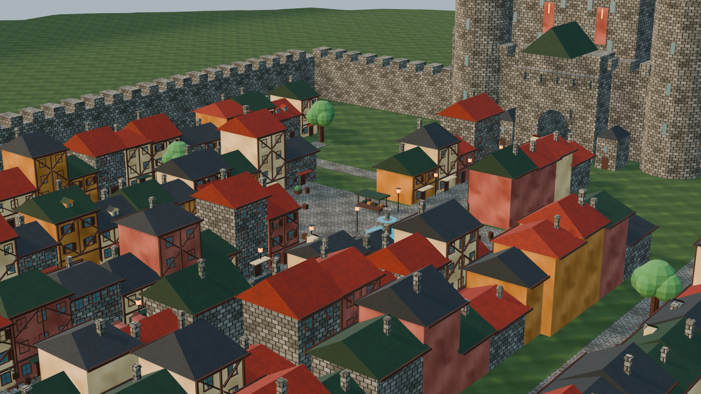
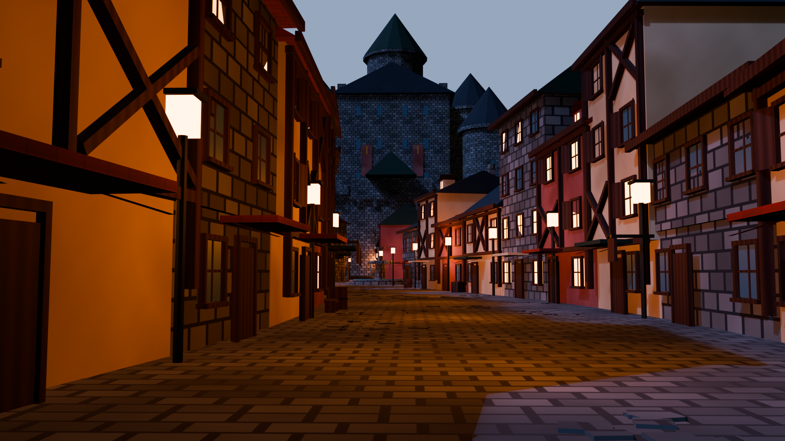
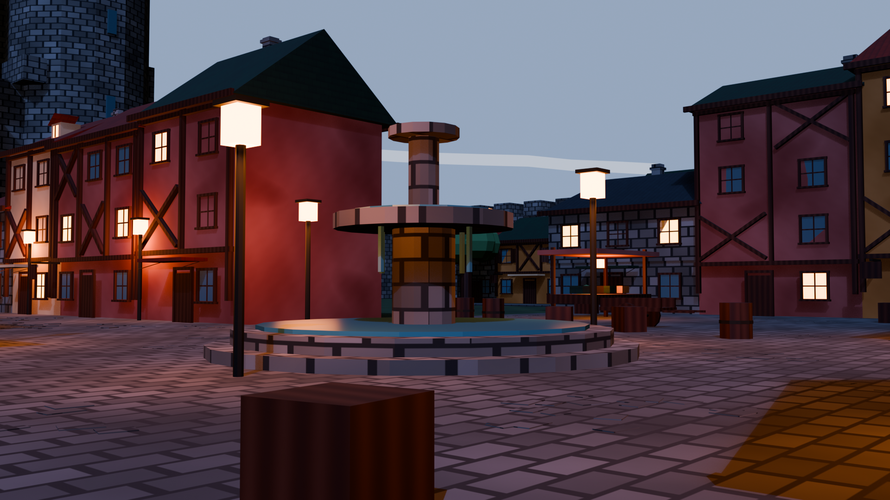
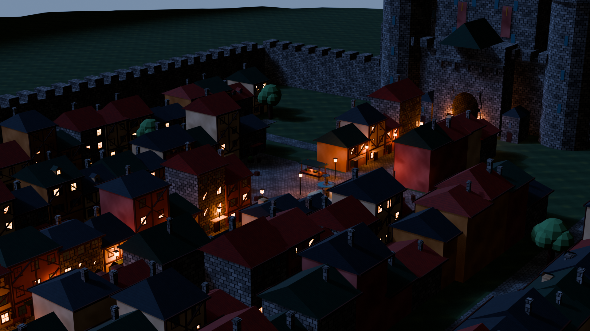

最終レンダリング






夕暮れバリエーション (TOWN_DUSK)



制作体制 — Claude と Codex の役割交代
| ラウンド | 実装 | レビュー | 主な内容 |
|---|---|---|---|
| v1 | Codex | Claude | SPEC策定(Claude)→初期実装。連続ファサード・城・広場・城壁は成立。ローポリ感が残る |
| v2 | Codex | Claude | 【追加要件】テクスチャ自前生成 (numpy→PNG 9枚、UV適用、GLB/FBX同梱)。城再構築・軒の張り出し |
| v3 | Claude | Codex | 瓦の市松模様化を修正、木目のマーブル化を修正、山をコーン群→連続稜線リングに、路地の装飾過多を整理、樹冠を球体化、草地テクスチャ追加 |
| v4-v5 | Claude | Codex指摘反映 | 石畳ジオメトリ削減 (全体trisの78%→散布方式)、テクスチャの完全タイリング保証 (整数波数ベクトル)、FBXをメッシュのみに、マテリアルスロット絞り込み、雪頂、地平の黒帯修正、カメラ調整 |
| 第1バッチ | Claude | Codex | 窓の深度レイヤ化 (奥まったガラス・枠・窓台)、開いた鎧戸、ドーマー窓、煙突変化、壁際の生活小物 (樽/木箱/ベンチ/植木/手押し車)、石畳の補修パッチ化。Codexレビューでドーマー埋没等4点を指摘→修正 |
| 第2バッチ | Codex | Claude | 城門を本物の門洞に再構築 (アーチ・奥にセットバックした格子・門洞内部)、夕暮れモード (TOWN_DUSK=1、窓の確率点灯・街灯主光源・月光) |
| カーブ化 | Claude | Codex | 大通りをS字中心線 (振幅6.5m、両門で中心に収束) に。全建物列が同じ横シフト＋接線回転で追従し路地幅を保存。道路はカーブ追従ストリップ、街灯・小物・カメラも追従。木骨パネルと窓の格子統一 (斜材が窓を貫通しない) もこの回で実施 |
自前生成テクスチャ (ダウンロード素材なし)
numpy で 512px のシームレステクスチャを生成。整数波数の周期ノイズでタイリングを数学的に保証。
cobblestone (石畳)plaster ×3 (漆喰 クリーム/ローズ/オーカー) stone_blocks (石壁)roof_tile ×3 (瓦) wood_grain (木目)grass (草地)
技術メモ
| 項目 | 内容 |
|---|---|
| 生成 | blender -b --factory-startup -P scripts/generate_town.py、シード固定で再現可能、約6秒 |
| ジオメトリ | bmesh不使用の直接メッシュ構築 (MeshBuilder)。窓・木骨・庇・胸壁は全てジオメトリ |
| UV | 面法線ベースのボックス投影 (決定的・オペレータ非依存) |
| レンダ | Eevee Next / Nishita空 / AgX。霞リング＋二重稜線リング＋広域地面で地平線を処理 |
| Unity向け | 1unit=1m、FBXはメッシュのみ・テクスチャ隣接コピー、メッシュごとに使用マテリアルのみ登録、浮き石はCollider非推奨 |